FoodLuck MEO 操作説明書 02
初期設定
GBP連携・ユーザー追加・グループ作成・順位計測設定を、現場で確認できる形に整理した資料
| この資料の使い方 初期設定は、店舗側が確認する項目とFoodLuck側で対応する項目が混ざります。この資料では、店舗側で判断が必要な確認事項、FoodLuckへ依頼する作業、実際の画面で見る場所を分けて説明します。 |
|---|
1. 初期設定で最初に押さえること
FoodLuck MEOを使い始める前に必要なのは、アカウントを作ること、Googleビジネスプロフィールと連携すること、必要な人だけが触れるように権限を整えること、順位を測るキーワードを決めることです。ここが整うと、投稿、写真追加、クチコミ返信、インサイト確認がスムーズになります。
| 設定項目 | 主に触る人 | 何のために必要か | 店舗側の確認ポイント |
|---|---|---|---|
| マスターアカウント | FoodLuck / 管理者 | 最初の管理者アカウントを作る | 登録メールが届いているか |
| GBP連携 | FoodLuck / 管理者 | Google上の店舗情報、投稿、クチコミ、インサイトを扱う | 管理権限のあるGoogleアカウントか |
| ユーザー追加 | FoodLuck / 管理者 | 店長や担当者ごとにログインできるようにする | 誰にどこまで操作を任せるか |
| グループ作成 | FoodLuck / 管理者 | 複数店舗を会社・ブランド単位でまとめる | 店舗の所属先が正しいか |
| 順位計測キーワード | FoodLuck / 店舗 | Google検索やマップでの順位を追う | 地域名と業態名の組み合わせが現実的か |
| GA4 / Yext | FoodLuck / 管理者 | Webサイト分析、外部媒体連携に使う | 契約・利用有無を確認する |
| 店舗側で無理に触らなくてよいもの GBP連携解除、ユーザー削除、権限変更、グループ一括登録、Yext連携、GA4連携などは影響範囲が大きいため、基本的にはFoodLuck側に相談してから進めます。 |
|---|
2. アカウント登録・パスワード設定
FoodLuck MEOを使う人ごとにアカウントを作ります。最初に発行されるマスターアカウント、追加で発行されるユーザーアカウント、パスワード再設定の流れを押さえておくと、ログインできない時の対応が早くなります。
- FoodLuck MEOから届いたアカウント発行メールを開きます。
- メール内のURLを開き、ユーザー情報とパスワードを設定します。
- 設定完了後、ログイン画面からメールアドレスとパスワードでログインします。
- メールが届かない場合は、迷惑メール、受信拒否設定、入力されたメールアドレスの誤りを確認します。
| パスワード設定の注意 パスワード設定URLには有効期限があります。期限が切れた場合やパスワードを忘れた場合は、ログイン画面のパスワード再設定からやり直します。パスワードは、半角英数字や記号を組み合わせた推測されにくいものにしてください。 |
|---|
□ アカウント発行メールを受け取った
□ ログインできることを確認した
□ 店舗を離れた人のアカウントが残っていないか確認した
3. Googleビジネスプロフィール連携
GBP連携は、FoodLuck MEOとGoogleビジネスプロフィールをつなぐ設定です。この連携ができていないと、Googleへの投稿、写真、クチコミ返信、インサイト取得が正しく使えない場合があります。
店舗一覧でGBP連携とGBPステータスを確認する
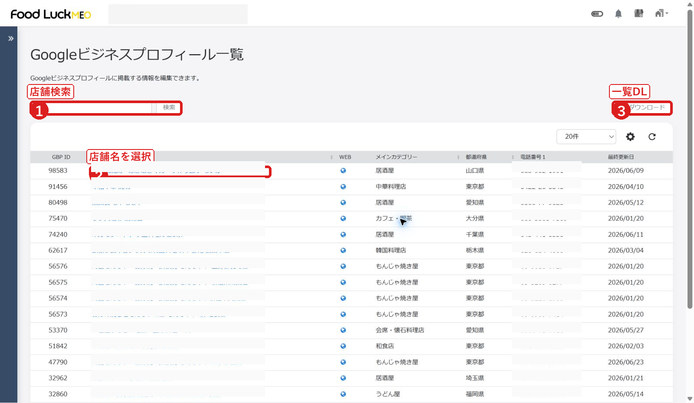
- 店舗一覧で対象店舗を検索します。
- GBP連携が有になっているか確認します。
- GBPステータスが確認済みか確認します。
FAQ画像: Googleビジネスプロフィール連携画面へ進む
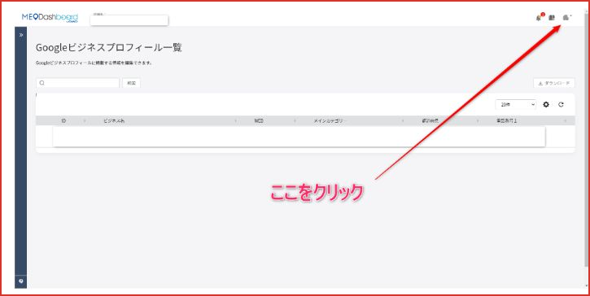
- 右上のビルマークから設定へ進みます。
- 店舗一覧で対象店舗を選びます。
- Googleビジネスプロフィール連携の操作場所を確認します。
FAQ画像: Googleアカウントを選択する
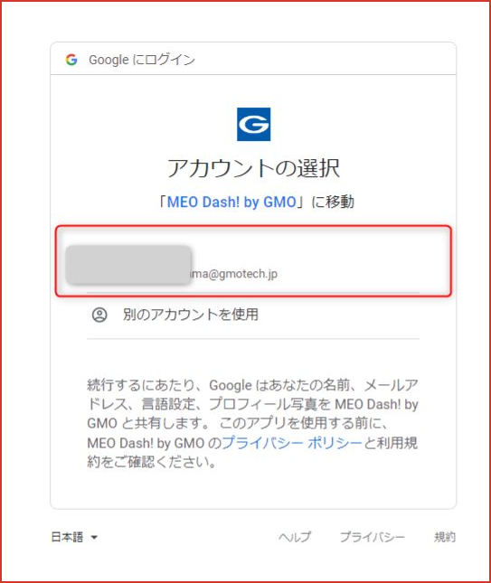
- GBPの管理権限を持っているGoogleアカウントを選びます。
- 店舗のオーナー権限がないアカウントでは、連携できない場合があります。
FAQ画像: ビジネスを選択して連携する
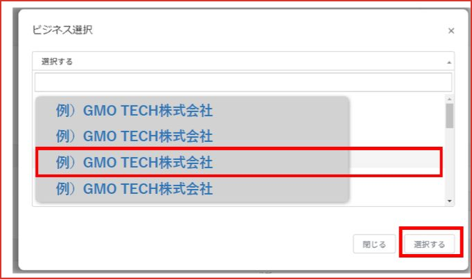
- 連携したいビジネス名を選択します。
- 対象店舗を間違えると別店舗の情報とつながるため、店舗名を必ず確認します。
- 設定画面から店舗一覧を開き、連携したい店舗を選びます。
- Googleビジネスプロフィール連携の欄で、Googleアカウント認証に進みます。
- GBPの管理権限を持つGoogleアカウントを選びます。
- 表示されたビジネス一覧から、対象店舗を選びます。
- 連携後、店舗一覧でGBP連携が有になっているか確認します。
| ステータスの見方 GBP連携が有でも、GBPステータスが確認済みでない場合は、インサイトなど一部データが取得できないことがあります。連携ステータスが無または非アクティブの場合は、Googleアカウント停止、権限不足、再連携が必要な状態を疑います。 |
|---|
4. GBP再連携・情報反映・トラブル確認
Googleアカウントの権限変更、アカウント停止、認証切れなどが起きると、連携が切れることがあります。その場合は、現在の連携状態を確認し、必要に応じて再連携します。
FAQ画像: 再連携で確認する画面
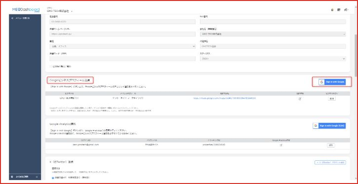
- 現在の連携状態を確認します。
- 連携解除は影響が大きいため、FoodLuckに確認してから操作します。
- 店舗一覧または店舗基本情報で、GBP連携とGBPステータスを確認します。
- 無または非アクティブの場合、連携しているGoogleアカウントが使える状態か確認します。
- オーナー権限のあるGoogleアカウントで再連携します。
- 再連携後、投稿、クチコミ、インサイトが取得できるか確認します。
| GBP情報をFoodLuck MEOへ反映する設定 FAQには、GBP側の店舗情報をFoodLuck MEOへ自動反映する設定もあります。GBPを正として毎朝の処理で反映する設定、差分反映または全反映の選択、Yahoo!プレイスへの自動反映などが含まれます。店舗情報の上書きにつながるため、FoodLuck側で確認してから使います。 |
|---|
- Googleアカウントが削除・停止されると、GBP連携が非アクティブになることがあります。
- 連携が切れると、インサイトが0表示になったり、投稿・写真・クチコミ返信が使えなくなる場合があります。
- GBPステータスが確認済みでない場合、Google側のオーナー確認が完了していない可能性があります。
- 再連携時は、対象店舗とGoogleアカウントを必ず確認します。
5. ユーザー追加・権限設定
店長、店舗スタッフ、本部担当者など、FoodLuck MEOを使う人ごとにユーザーを追加します。権限を広くしすぎると、誤って投稿、削除、連携変更をしてしまう恐れがあります。現場で使う人には、必要な機能だけを渡します。
FAQ画像: ユーザー設定一覧からユーザー追加へ進む
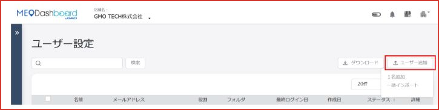
- ユーザー設定一覧を開きます。
- ユーザー追加から新しいアカウントを発行します。
FAQ画像: ユーザー情報を入力する
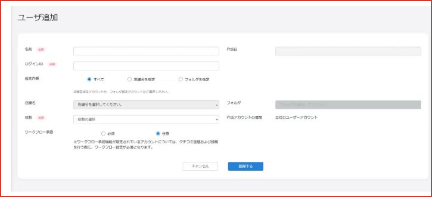
- 名前、メールアドレス、役割、所属グループなどを設定します。
- 招待メールが届いたら、ユーザー側で登録を完了します。
| 役割 | 向いている人 | 注意点 |
|---|---|---|
| 全権限 / 管理者 | FoodLuck、本部管理者 | 連携・削除・設定変更まで触れるため、少人数に限定します。 |
| 承認 | 投稿や変更内容を確認する責任者 | ワークフロー運用をする場合に使います。 |
| 編集 | 店長、運用担当者 | 投稿、写真、クチコミ返信など日常作業に向きます。 |
| 閲覧 | 確認だけする人 | 数値や投稿状況を見るだけの人に向きます。 |
| カスタム | 機能ごとに細かく制限したい人 | キーワード登録など必要な機能だけを許可できます。 |
| ユーザー削除・一括追加 退職者や担当変更があった場合は、ユーザー削除または権限見直しが必要です。複数名をまとめて追加する場合は一括追加テンプレートを使えますが、メールアドレスと役割の誤りに注意します。 |
|---|
6. グループ作成・グループ管理
グループは、複数店舗を会社、ブランド、エリア、担当者別にまとめるための機能です。グループを正しく作ると、本部やFoodLuck側で店舗を探しやすくなり、一括操作の対象も整理できます。
FAQ画像: グループ一覧から追加へ進む
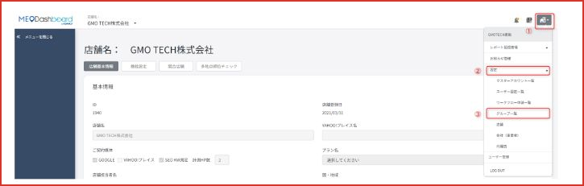
- グループ一覧を開きます。
- グループ追加から新しいグループを作成します。
FAQ画像: フォルダ名を入力する
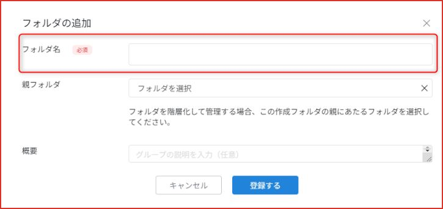
- 会社名、ブランド名、エリア名など分かりやすいフォルダ名を入れます。
- あとで店舗を探す人が迷わない名前にします。
FAQ画像: 所属店舗を選択する
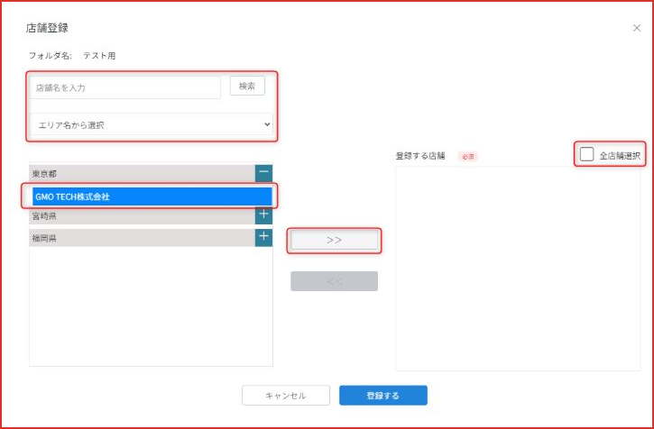
- グループに入れる店舗を選びます。
- 一括操作の対象にも関わるため、所属店舗の間違いに注意します。
- グループは階層管理できます。会社、ブランド、エリアの順に整理すると見やすくなります。
- グループ編集では、フォルダ名、概要、所属店舗を変更できます。
- 一括登録を使う場合は、テンプレートの列と店舗IDを間違えないようにします。
- 店舗側は、自分の店舗が正しいグループに入っているか確認できれば十分です。
7. キーワード・順位計測設定
順位計測キーワードは、Google検索やGoogleマップで、お店がどのくらい見つけられているかを見るための設定です。飲食店では、地域名と業態名、メニュー名を組み合わせると実際の来店につながる検索に近くなります。
管理画面: 順位チャートで計測結果を見る
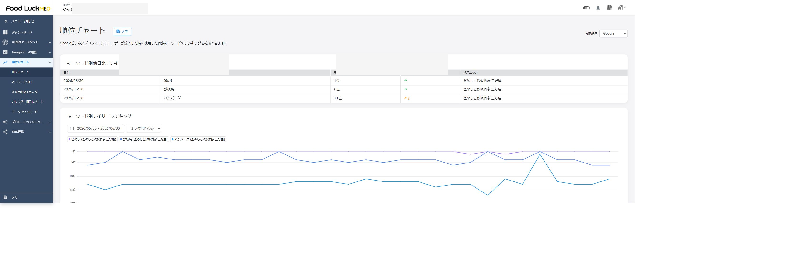
- 順位レポートから順位チャートを開きます。
- 日別順位と順位推移を確認します。
FAQ画像: キーワード設定画面へ進む
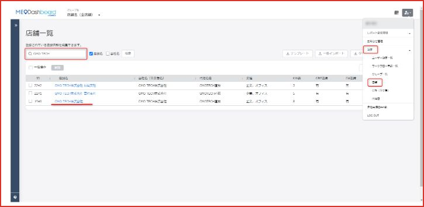
- 店舗一覧から対象店舗を選び、キーワード設定へ進みます。
- 現在の登録キーワードと検索エリアを確認します。
FAQ画像: 検索エリアを設定する
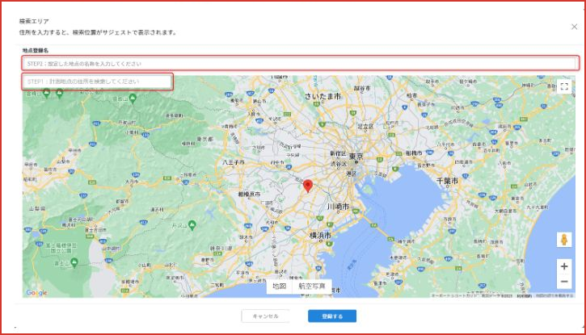
- 地図上で順位を測る地点を設定します。
- 店舗周辺、主要駅、商圏の中心など、実際にお客様が検索しそうな場所を選びます。
| キーワード例 | 向いている目的 | 考え方 |
|---|---|---|
| 地域名 + 業態 | 来店見込みの確認 | 例: 渋谷 居酒屋、三軒茶屋 焼鳥 |
| 地域名 + メニュー | 看板商品の訴求 | 例: 横浜 ランチ、博多 もつ鍋 |
| 駅名 + 利用シーン | 宴会・予約の獲得 | 例: 新宿 個室 居酒屋、池袋 宴会 |
| キーワード変更の注意 計測をOFFにすると過去データを残したまま取得を止める扱いになります。一方、削除すると過去データの確認やダウンロードに影響する場合があります。キーワードの一括変更・一括設定は影響範囲が大きいため、FoodLuck側で確認してから行います。 |
|---|
8. GA4・キャンペーンURL・Yext連携
初期設定カテゴリには、Googleアナリティクス（GA4）、キャンペーンURL、Yext連携も含まれます。これらは日常的に店舗スタッフが触るというより、Webサイトや外部媒体の分析・連携を整えるための管理者向け設定です。
FAQ画像: GA4連携でGoogleアカウントを選択する
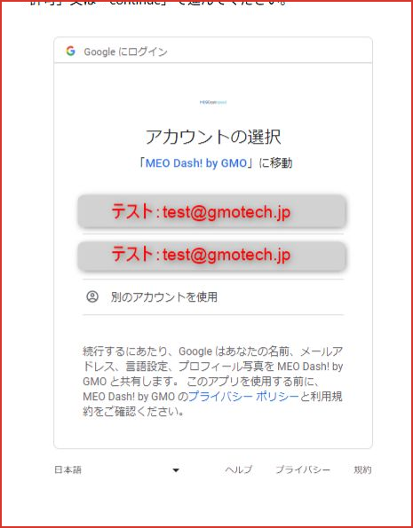
- GA4の権限を持つGoogleアカウントを選びます。
- Webサイトの分析データと連携するための設定です。
FAQ画像: GA4のビジネス/プロパティを選択する
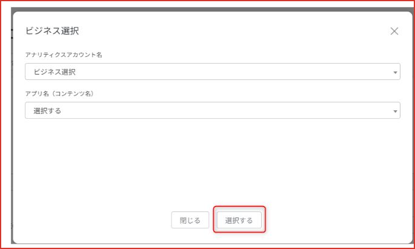
- 連携するビジネスやプロパティを選びます。
- サイトが複数ある場合は、対象店舗のWebサイトと合っているか確認します。
FAQ画像: Yext連携の初期対応
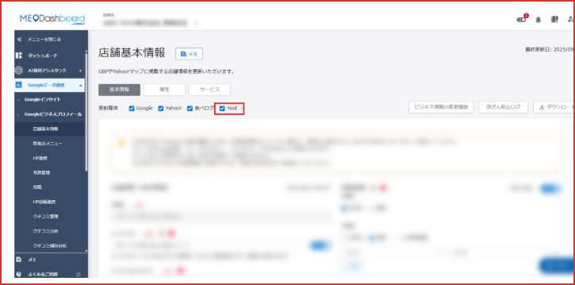
- Yext連携は外部媒体へ店舗情報を配信するためのオプション設定です。
- 連携先や契約状況をFoodLuck側で確認してから進めます。
- GAとGA4は計測の考え方が異なり、GA4はページ単位だけでなくイベント単位で行動を見ます。
- キャンペーンURL生成は、どの媒体や投稿からWebサイトへ来たかをGA4で見やすくするために使います。
- Yextでは外部媒体へ店舗情報を連携できます。写真連携では最大50枚まで選択して送信できます。
- Yext連携の解除や写真送信は外部媒体へ影響するため、FoodLuck側で確認してから操作します。
9. 初期設定後の確認チェックリスト
初期設定は一度整えたら終わりではなく、担当者変更、Googleアカウント変更、店舗追加、キーワード変更のタイミングで見直します。最低限、次の項目を確認しておくと、運用中のトラブルを防ぎやすくなります。
□ ログインできるユーザーと、退職者・不要アカウントを確認した
□ 店舗一覧で対象店舗のGBP連携が有になっている
□ GBPステータスが確認済みになっている
□ Googleアカウントの管理者・オーナー権限が分かっている
□ 投稿・写真・クチコミ返信を担当する人の権限が適切になっている
□ グループに入っている店舗が正しい
□ 順位計測キーワードと検索エリアが、実際の商圏に合っている
□ GA4やYextなどのオプション連携の利用有無が整理されている
10. この資料に反映したFAQ記事
このカテゴリの下層FAQ記事を確認し、本文中の該当章へ反映しています。店舗現場が日常的に触らない高度な設定は、本文ではFoodLuck側で確認する項目として整理しています。
| FAQ記事 | 反映した章 | 店舗向けの扱い |
|---|---|---|
| GAとGA4の違い | GA4・キャンペーンURL | FoodLuck側で確認して進める項目 |
| GBPステータスについて | GBP連携・再連携・ステータス確認 | 店舗側は状態確認、設定変更はFoodLuckへ相談 |
| GBP情報をMEO Dashboardに反映 | GBP連携・再連携・ステータス確認 | 店舗側は状態確認、設定変更はFoodLuckへ相談 |
| GBP連携のステータスについて | GBP連携・再連携・ステータス確認 | 店舗側は状態確認、設定変更はFoodLuckへ相談 |
| Googleアカウントが削除・停止した場合に起こる事象の紹介 | GBP連携・再連携・ステータス確認 | FoodLuck側で確認して進める項目 |
| Googleアナリティクス（GA4） キャンペーンURL生成 | GA4・キャンペーンURL | FoodLuck側で確認して進める項目 |
| Googleアナリティクス（GA4）との連携方法 | GA4・キャンペーンURL | FoodLuck側で確認して進める項目 |
| Googleアナリティクス（GA4）とは | GA4・キャンペーンURL | FoodLuck側で確認して進める項目 |
| GoogleビジネスプロフィールとDashboardの再連携方法 | GBP連携・再連携・ステータス確認 | FoodLuck側で確認して進める項目 |
| GoogleビジネスプロフィールとMEO Dashboardの連携方法 | GBP連携・再連携・ステータス確認 | 店舗側は状態確認、設定変更はFoodLuckへ相談 |
| Googleビジネスプロフィールにてグループを作成する方法 | GBP連携・再連携・ステータス確認 | 店舗側は状態確認、設定変更はFoodLuckへ相談 |
| Googleビジネスプロフィールのオーナー権限移譲の方法 | GBP連携・再連携・ステータス確認 | FoodLuck側で確認して進める項目 |
| Googleビジネスプロフィールの店舗情報一覧のダウンロード方法 | GBP連携・再連携・ステータス確認 | 店舗側は状態確認、設定変更はFoodLuckへ相談 |
| Yextについて | Yext連携 | FoodLuck側で確認して進める項目 |
| Yext連携の初期ご対応について | Yext連携 | FoodLuck側で確認して進める項目 |
| 【個店】Yextで写真連携を行う方法 | Yext連携 | FoodLuck側で確認して進める項目 |
| アカウントの設定を変更する方法 | その他の初期設定 | 店舗側は状態確認、設定変更はFoodLuckへ相談 |
| アカウント発行メールが届かない場合 | アカウント登録・ログイン対応 | 店舗側も確認する項目 |
| キーワードの一括変更方法 | キーワード・順位計測設定 | FoodLuck側で確認して進める項目 |
| キーワードの変更方法 | キーワード・順位計測設定 | 店舗側は状態確認、設定変更はFoodLuckへ相談 |
| キーワードの設定方法 | キーワード・順位計測設定 | 店舗側は状態確認、設定変更はFoodLuckへ相談 |
| キーワード登録が可能なユーザーアカウント発行方法 | ユーザー追加・権限設定 | 店舗側も確認する項目 |
| キーワード設定の検索エリアについて | キーワード・順位計測設定 | 店舗側は状態確認、設定変更はFoodLuckへ相談 |
| グループフォルダ・グループ管理について | グループ作成・グループ管理 | 店舗側は状態確認、設定変更はFoodLuckへ相談 |
| グループ作成の一括登録方法 | グループ作成・グループ管理 | FoodLuck側で確認して進める項目 |
| グループ管理画面での編集機能について | グループ作成・グループ管理 | 店舗側は状態確認、設定変更はFoodLuckへ相談 |
| パスワードをお忘れの場合やパスワードを未登録の方 | アカウント登録・ログイン対応 | 店舗側も確認する項目 |
| パスワード設定時の注意事項 | アカウント登録・ログイン対応 | 店舗側も確認する項目 |
| マスターアカウントの登録手順 | アカウント登録・ログイン対応 | 店舗側は状態確認、設定変更はFoodLuckへ相談 |
| ユーザーアカウントの作成（ユーザー側のすること）について | ユーザー追加・権限設定 | 店舗側も確認する項目 |
| ユーザーアカウントの削除方法 | ユーザー追加・権限設定 | FoodLuck側で確認して進める項目 |
| ユーザーアカウントの５つの役割について | ユーザー追加・権限設定 | 店舗側も確認する項目 |
| ユーザーアカウント作成 機能ごとの役割の設定方法 | ユーザー追加・権限設定 | 店舗側も確認する項目 |
| ユーザーアカウント作成について | ユーザー追加・権限設定 | 店舗側も確認する項目 |
| ユーザー一括追加方法 | ユーザー追加・権限設定 | FoodLuck側で確認して進める項目 |
| ワークフロー申請必須のユーザーアカウント発行方法 | ユーザー追加・権限設定 | 店舗側も確認する項目 |
| 一括でキーワードを設定する方法 | キーワード・順位計測設定 | FoodLuck側で確認して進める項目 |
| 新規グループの登録方法 | グループ作成・グループ管理 | 店舗側は状態確認、設定変更はFoodLuckへ相談 |